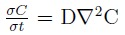
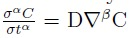

1.1 Introduction
Math is used all around us from the most obvious to the most peculiar things. This pushes us to think about what can be achieved by implementing maths. This is our attempt at gauging opportunities and problems that can be solved with the help of maths. The field of maths we chose for our project is fractional calculus. This maths topic is growing widely in many different applications in physics, Economics, Finance, and many more. It generalizes the operations performed using differentiation and integration to non-integer. Non-integer orders are often used in fractional calculus which are real numbers that is not an integer. We must have learned in high school about differentiation and integration where we try to find out the derivative or integration of some function by applying basic differentiation and integration properties. We know that the first derivative of the function indicates the slope and the second derivative indicates concavity. But, have you ever wondered if we can also find the half derivative or half integral of any function?
1.2 History
The topic of our project is Fractional Calculus. It is more than 300 years old. Fractional derivative first appeared in a letter written by Gottfried Wihelm Leibniz toGuillaume de L’Hopital where the meaning of half-derivative has been raised. 30th September 1965, was the date when fractional calculus was born. In the 19th century, the theory of fractional calculus was the great fact of interest among the great minds which included Euler, Laplace, Fourier, Lacroix, Abel, Reimann, and Lioville. In 1819, Lacroix in one of his books, he gave the correct answer to the question which Leibniz mentioned in his letter where he found the correct answer of half-derivative of x is 2\( \sqrt{\frac{x}{\pi}} \) During the 19th Century, fractional calculus had further improvement with Riemann introducing many more definitions of fractional derivatives and integrals. An English physicist Oliver Heaviside also made many contributions to some practical applications of fractional calculus. During the 20th century, it became a tool that can be used for modeling complex phenomena in various fields.
1.3 Current Affairs
As we all know maths continues with every passing day. In recent times with the advent of new technology fractional calculus has found its place in implementation.
• visco-elastic diffusion in complex liquids(Langevin fractional equation)
• Ubiquitous fractional order memory system
• Image Processing
• Magnetic Resonance Imaging(MRI)
• Machine Learning
• Tautochrone Curve Further down the document we are going further
focus on the Tautochrone curve and its applications. Fractional calculus will possibly see a rise in its learners because of its vast applications especially those in machine learning would attract significant interest in the subject.
Memory storage
Fractional derivatives are derived from integrals. This means that the value of fractional derivative at a point depends on the previous points as well. This could be thought as some kind of memory. And thus fractional calculus can be applied for storing memory effectively. We can also use fractional calculus to model things with memory such as genetics.
Fractional derivative correlation with anomalous diffusion and fluid dynamics
Fractional calculus enables us to study fluid dynamics more accurately. The use of fractional calculus is to derive various fluid dynamics equations. Particularly when studying anomalous diffusion where the commonly used equation given by Adolf Fick for diffusion does not work.The equation by Adolf Fick is

Using fractional calculus we can make the equation available for anomalous diffusions by tweaking the formula

fluid flow can be highly chaotic. The need of fractional calculus arises in order to encapsulate these movements in form of equations and to study them. Sub-diffusion and super-diffusion are to of the anomalies whose results could be calculated using the equation which utilizes fractional calculus. Apart from diffusion in liquid fractional calculus can be used to more accurately predict anomalous diffusion of heat, finance, plasma infusion reactors, flow of underground water.
Machine Learning
In a 2018 speech by Mamikon Gulian he talked how machine learning
could be used to derive complex equations using fractional calculus. Fractional
calculus could be used to derive equations for multiple problems butthe obstacle is that it takes a lot of time to calculate complex fractional
calculus equations. He mentioned of Michael Schmidth and Hod Lipson
discovered the conservation Law of a double pendulum back in 2009 using
machine learning. This makes the learning of fractional calculus that much
more motivating. The conclusion of the speech was that a hidden branch of
physics could be discovered by employing the strength of machine learning.
One of the most attractive use of fractional order differential equation is to
be able to model natural phenomena in the form of equations.
On the other hand fractional calculus helps develop machine learning by aiding in creating complex algorithms. So it would be fair to say that there is some kind of symbiotic relationship between machine learning and fractional calculus.
As we know machine learning requires studying a lot of data and patterns these patterns can be modeled with the help of fractional derivative. These patterns might have been needed to approximate if we had integral order differential equations only.One profound use of the combination of machine learning and fractional calculus could be to detect fractional behaviour out of data. When we feed data to a machine it would be able to tell what function of fractional derivative is working. We can use this functionality to predict the future by simply deriving an equation for it. This could potentially be of use in the stock market.
Fractional calculus could aid machine learning in various ways such as processing the data before it has been fed for to the machine for training. This process is known as pre-processing. For example in spectroscopy the data is first refined by fractional calculus algorithms so that when we apply machine learning it could produce more accurate results.